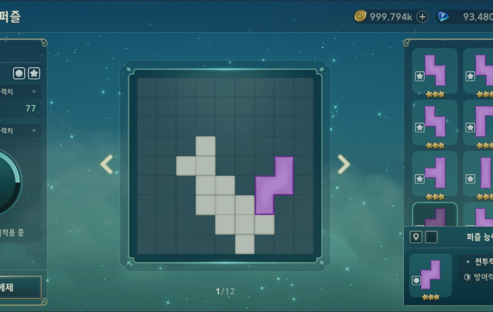
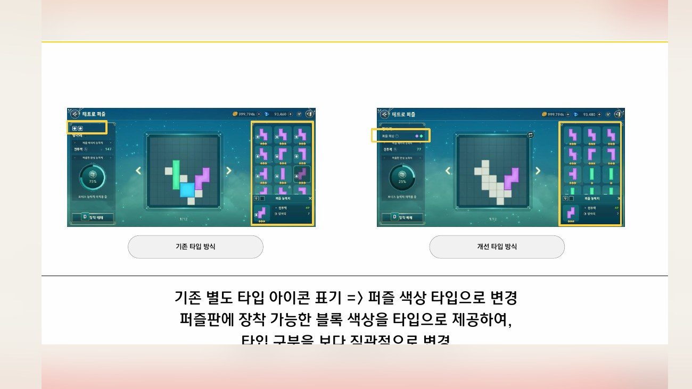
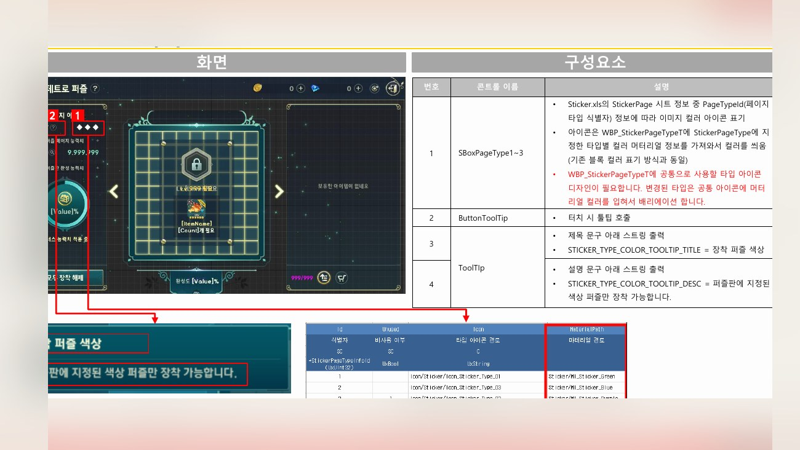
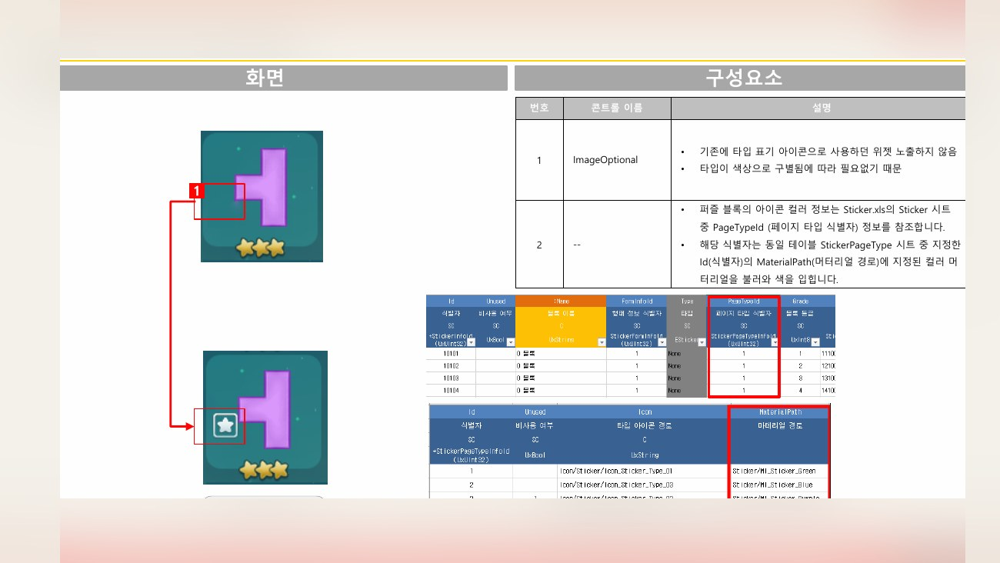

Planning Context
어떤 기획이었나
- 퍼즐형 성장 시스템은 보유, 장착, 성장 가능 상태가 분리되어 있어 유저가 다음 행동을 판단하기 어려울 수 있습니다.
- 가방과 메인 화면의 정보 구조가 명확하지 않으면 성장 동기와 조작 흐름이 약해집니다.
ProjectN · Puzzle Growth UX
테트로 퍼즐의 장착, 가방, 메인 화면과 성장 인지를 개선한 시스템 UX 사례입니다.

Planning Context
Process
Deliverables
Result
퍼즐 성장 시스템의 보유, 장착, 성장 가능 상태를 연결해 유저가 다음 행동을 이해하기 쉬운 구조로 정리했습니다.
Deliverable Captures
원본 문서는 포함하지 않고, 포트폴리오 확인용으로 일부 페이지만 이미지화했습니다. 슬라이드 마스터/상하단 영역은 흐림 처리했습니다.


